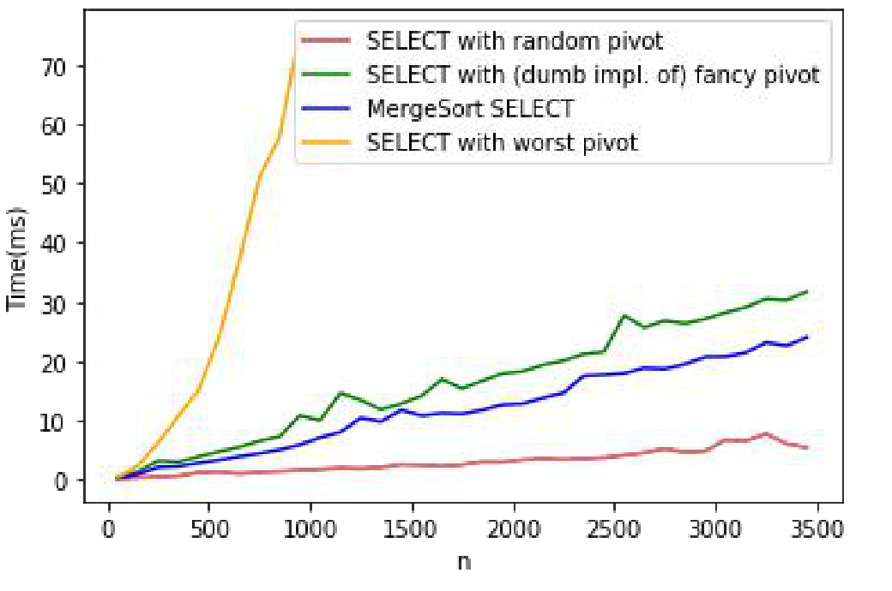
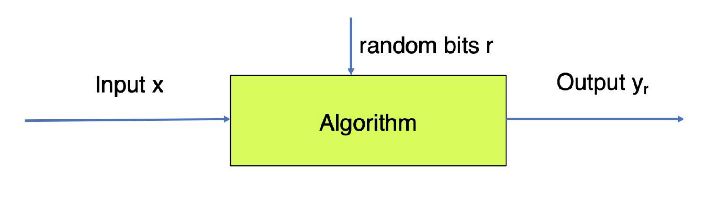
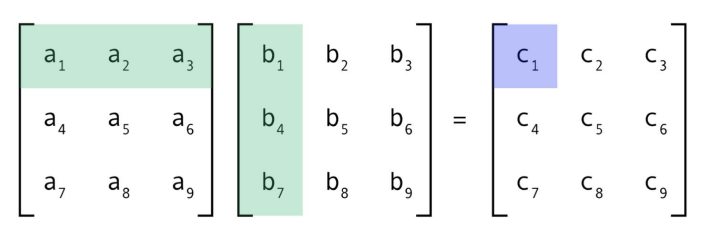
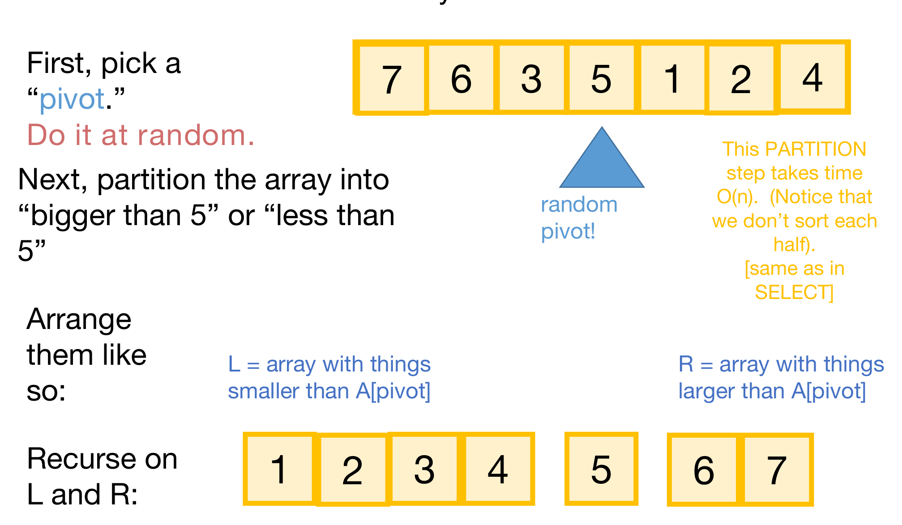
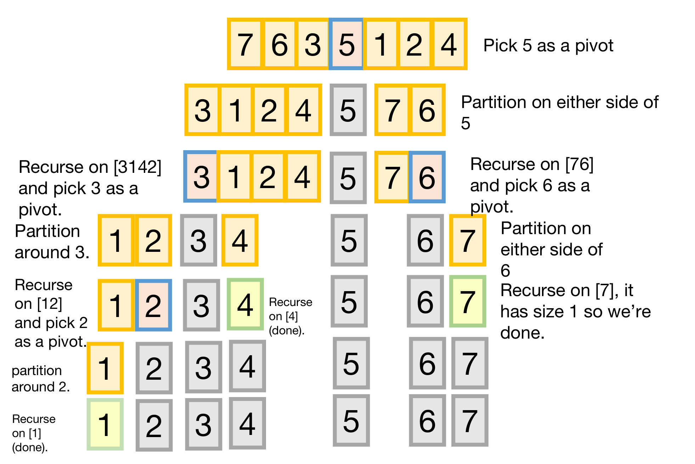
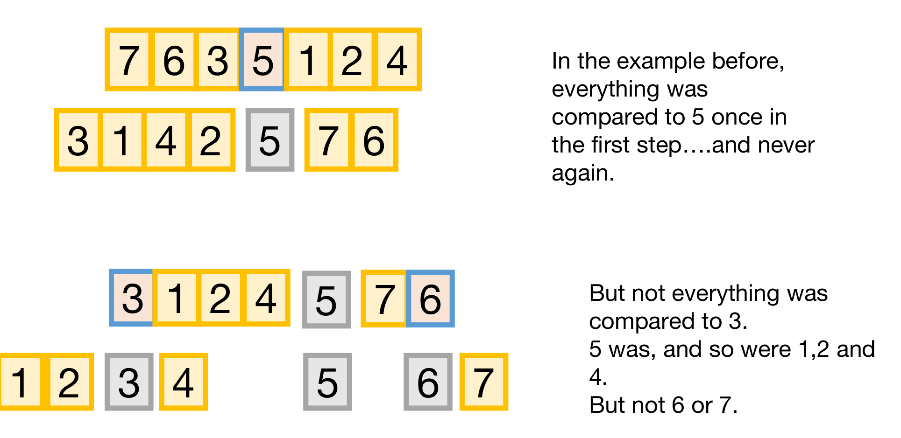
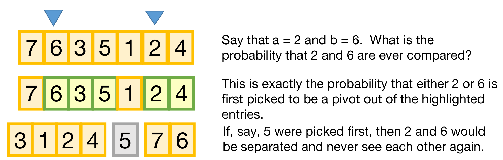
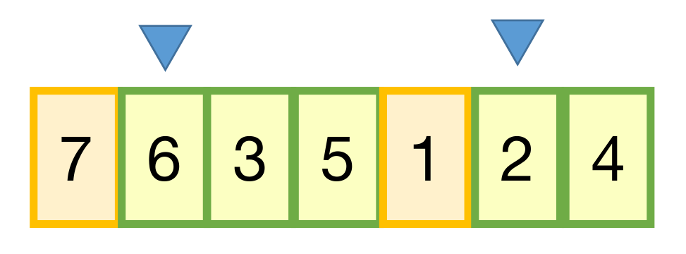
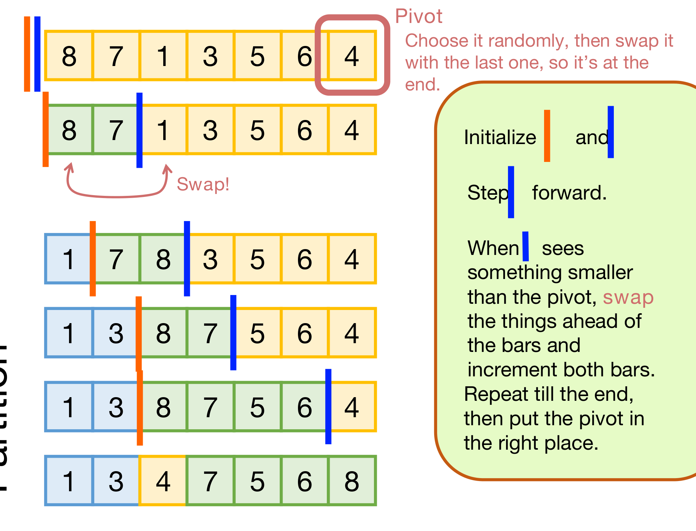
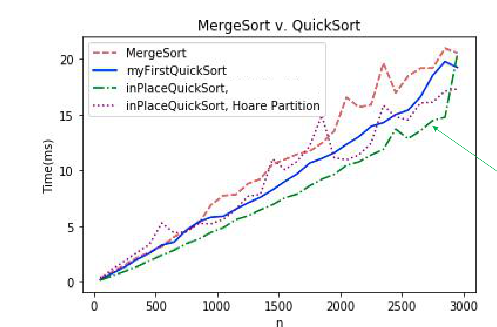

본 포스트는 서울대학교 Chenglin Fan 교수님의 4190.407 Algorithms (Design and Analysis of Algorithms) 강의 자료(5강 Randomized algorithms and QuickSort, 총 45장)를 바탕으로, 강의를 처음 듣는 독자도 논리적 흐름을 따라갈 수 있도록 재구성한 것입니다. 1강 표지에 명시되어 있듯 이 시리즈의 슬라이드는 상당 부분 Stanford의 Mary Wootters 교수님 자료에서 가져온 것이며, 본문의 대섹션 구분은 슬라이드의 제목을 순서대로 그대로 따랐습니다. 특히 이 회차에는 Monte Carlo와 Las Vegas라는 두 장의 표지 슬라이드가 삽입되어 있어, 그 둘이 강의 전체를 가르는 구조적 경계 역할을 합니다.
한 줄 요약 (TL;DR)
“’기대되는 상황에서의 실행 시간’은 ’실행 시간의 기댓값’이 아닙니다 — 그 둘을 혼동하면 \(\Theta(n^2)\) 알고리즘도 \(O(n\log n)\)이라고 증명됩니다.”
4강은 적대자(adversary)를 상정하고 결정론적으로 좋은 피벗을 만들어 최악의 경우 \(O(n)\) SELECT를 얻었고, 그 대가로 큰 선행 상수를 치렀습니다. 5강은 반대편 길을 갑니다 — 동전을 던져 피벗을 고르고, 그 대신 보장을 최악의 경우가 아니라 기댓값으로 받습니다. 먼저 무작위 알고리즘을 몬테카를로(실행 시간 고정, 정답이 확률적)와 라스베이거스(항상 정답, 실행 시간이 확률적)로 나누고, 몬테카를로의 예로 \(O(n^3)\) 대신 \(O(n^2)\)에 행렬 곱을 검증하는 Freivald 알고리즘을 봅니다. 이어 라스베이거스의 예인 QuickSort로 넘어가, \(E[|L|] = \frac{n-1}{2}\)를 재귀식에 곧바로 대입하는 그럴듯한 증명이 왜 틀렸는지를
SlowSort라는 반례로 드러냅니다. 올바른 증명은 재귀식을 포기하고 비교 횟수를 직접 세는 것입니다 — 두 원소 \(a, b\)가 비교될 확률이 정확히 \(\frac{2}{b-a+1}\)임을 보이고, 이를 모든 쌍에 대해 더하면 \(2n\ln n\) 미만이 나옵니다.
1. 지난 시간 (Last Time)
4강에서 우리는 SELECT 문제를 최악의 경우 \(O(n)\) 시간에 푸는 분할 정복 알고리즘을 보았습니다. 그리고 그 모든 것은 결국 피벗을 어떻게 고르느냐로 귀결되었습니다.

2. 무작위 알고리즘 (Randomized Algorithms)
원본 슬라이드는 위키백과의 정의를 그대로 인용합니다 — “자신의 논리 일부로 무작위성을 활용하는 알고리즘(algorithms which employ a degree of randomness as part of its logic).”

3. 몬테카를로 (Monte Carlo)
3.1 몬테카를로 대 라스베이거스 (Monte Carlo vs Las Vegas)
무작위 알고리즘에는 두 종류가 있습니다. 앞 절에서 보았듯 난수 \(r\)은 정답과 실행 시간 양쪽에 영향을 줄 수 있는데, 그중 무엇을 고정하고 무엇을 확률에 맡길 것인가로 나뉩니다.
| 몬테카를로 (Monte Carlo) | 라스베이거스 (Las Vegas) | |
|---|---|---|
| 실행 시간 | 고정(fixed) | 확률적(random) |
| 정답 | 확률적(random) | 항상 정답(always correct) |
원본 슬라이드는 두 도시의 사진을 나란히 놓아 이름을 각인시킵니다. 구분의 요령은 “무엇을 걸었는가”를 묻는 것입니다.
- 몬테카를로는 정답을 걸고 도박합니다. 정해진 시간 안에 반드시 답을 내놓지만, 그 답이 맞다는 보장이 없습니다.
- 라스베이거스는 시간을 걸고 도박합니다. 답은 반드시 맞지만, 언제 끝날지를 보장할 수 없습니다.
이번 강의는 몬테카를로의 예로 Freivald 알고리즘을, 라스베이거스의 예로 QuickSort를 다룹니다. QuickSort가 라스베이거스인 이유는 분명합니다 — 피벗을 어떻게 고르든 정렬 결과는 언제나 옳고, 달라지는 것은 오직 실행 시간뿐이기 때문입니다. 4강 §3.4에서 “정확성은 피벗 선택과 무관하다”고 못박아 둔 것이 바로 이 성질입니다.
3.2 행렬 곱 검증 (Checking Matrix Multiplication)
몬테카를로의 예로 다음 문제를 봅니다.
\(n \times n\) 행렬 세 개 \(A\), \(B\), \(C\)가 주어졌을 때,
\[A \times B \stackrel{?}{=} C\]
인지 판정하라.
곱셈을 수행하는 문제가 아니라 누군가 내놓은 답 \(C\)가 맞는지 검사하는 문제라는 점이 중요합니다. 검사가 계산보다 싸야 의미가 있습니다.
3.3 결정론적 방법 (Deterministic)
가장 단순한 방법은 그냥 곱해서 비교하는 것입니다.

- \(A B\)를 표준 행렬 곱셈으로 계산한 뒤 그 결과를 \(C\)와 비교합니다.
- 출력이 \(n^2\)개이고 출력 하나마다 연산이 \(n\)번 필요하므로, 비용은 \(O(n^3)\)입니다.
3.4 Freivald 알고리즘 (Freivald’s Algorithm)
핵심 아이디어는 행렬 전체를 비교하지 말고, 벡터 하나만 비교하자는 것입니다.
아이디어: “\(AB = C\)” 대신 “\(AB\,r = C\,r\)”를 검사한다.
Freivald's Algorithm
.........................................
Pick a uniform random r ∈ {0, 1}^n ;
Check whether A(Br) = Cr ;- \(AB = C\)라면 어떤 \(r\)에 대해서도 \(ABr = Cr\)이므로 알고리즘은 반드시 “같다”고 답합니다.
- 문제는 반대 방향입니다 — \(AB \ne C\)인데도 운 나쁘게 \(ABr = Cr\)이 되어 버리는 \(r\)이 있을 수 있습니다. 그 확률을 묶는 것이 §3.6의 몫입니다.
3.5 실행 시간 (Running Time)
\(n\)차원 벡터를 하나 끼워 넣은 것만으로 비용이 어떻게 달라지는지 보겠습니다.
| 단계 | 연산 | 비용 |
|---|---|---|
| 1 | \(r = (r_1, r_2, \dots, r_n) \in \{0,1\}^n\)을 균등하게 무작위로 뽑는다 | \(O(n)\) |
| 2 | \(z \leftarrow Br\) | \(O(n^2)\) |
| \(x \leftarrow Az\) | \(O(n^2)\) | |
| \(y \leftarrow Cr\) | \(O(n^2)\) | |
| 3 | \(x = y\)인지 확인한다 | \(O(n)\) |
전체는 \(O(n^2)\)이고, §3.3의 \(O(n^3)\)보다 한 차수 낮습니다.
이 알고리즘이 성립하는 유일한 근거는 행렬 곱의 결합법칙(associativity)입니다.
\[A(Br) = (AB)\,r\]
왼쪽은 행렬 \(\times\) 벡터를 두 번 하는 것이고, 오른쪽은 행렬 \(\times\) 행렬을 한 번 한 뒤 벡터를 곱하는 것입니다. 수학적으로는 같은 값이지만 계산 비용이 전혀 다릅니다.
- 행렬 \(\times\) 벡터는 \(O(n^2)\) — 결과가 원소 \(n\)개이고 각 원소마다 곱셈 \(n\)번.
- 행렬 \(\times\) 행렬은 \(O(n^3)\) — 결과가 원소 \(n^2\)개이고 각 원소마다 곱셈 \(n\)번.
즉 \(AB\)를 절대 만들지 않는 것이 요령이며, 위 2단계에서 \(z \leftarrow Br\)을 먼저 계산하고 그 다음에 \(x \leftarrow Az\)를 계산하는 순서가 정확히 그 이유 때문입니다.
3.6 건전성 (Soundness)
이제 “운 나쁘게 통과할” 확률을 묶습니다.
\(AB \ne C\)라고 하자. 균등하게 무작위로 뽑은 벡터 \(r = (r_1, r_2, \dots, r_n) \in \{0,1\}^n\)에 대하여
\[\Pr[\,A B r = C r\,] \;\le\; \frac{1}{2}\]
이다. 또한 집합 \(\{0,1\}\)은 서로 다른 두 수로 이루어진 임의의 집합으로 바꾸어도 무방하다.
즉 \(AB \ne C\)일 때 알고리즘이 속을 확률은 많아야 \(1/2\)입니다. 동전 한 번 던지는 것과 같은 수준이므로 아직 실용적이라고 하기는 어렵고, 그 해결이 §3.7의 증폭입니다.
원본 슬라이드는 정리만 제시하고 증명을 남기지 않지만, 표준적인 논증은 짧아서 따라가 볼 만합니다.
\(D := AB - C\)로 두면 가정에서 \(D \ne O\)이므로 \(D_{ij} \ne 0\)인 성분이 적어도 하나 존재합니다. 우리가 묶고 싶은 것은 \(\Pr[Dr = 0]\)입니다. 벡터 \(Dr\) 전체가 \(0\)이 되려면 적어도 \(i\)번째 성분은 \(0\)이어야 하므로
\[\Pr[\,Dr = 0\,] \;\le\; \Pr\!\left[\,(Dr)_i = 0\,\right]\]
입니다. 여기서 \((Dr)_i = \sum_{k=1}^{n} D_{ik} r_k\)인데, 이 합에서 \(r_j\) 항만 떼어 내면
\[(Dr)_i \;=\; D_{ij}\, r_j \;+\; \underbrace{\sum_{k \ne j} D_{ik} r_k}_{=:\,S}\]
가 됩니다. 이제 \(j\)번째를 제외한 나머지 좌표들을 먼저 다 뽑았다고 생각합니다. 그러면 \(S\)는 하나의 값으로 확정되고, \((Dr)_i = 0\)이 성립하려면
\[r_j \;=\; -\frac{S}{D_{ij}}\]
여야 합니다. \(D_{ij} \ne 0\)이므로 이 우변은 딱 하나의 값입니다. 그런데 \(r_j\)는 \(\{0,1\}\)에서 균등하게, 그리고 나머지 좌표와 독립적으로 뽑히므로, 두 후보 중 많아야 하나만 이 조건을 만족합니다. 따라서
\[\Pr\!\left[\,(Dr)_i = 0 \;\middle|\; r_k\ (k \ne j)\,\right] \;\le\; \frac{1}{2}\]
이고, 조건을 모든 경우에 대해 평균 내어도 \(\Pr[(Dr)_i = 0] \le \frac{1}{2}\)입니다. \(\blacksquare\)
증명에서 \(\{0,1\}\)이라는 사실을 쓴 곳은 “후보가 두 개뿐”이라는 마지막 한 걸음뿐입니다. 그래서 정리의 단서 그대로, 서로 다른 두 수로 이루어진 어떤 집합을 써도 결론은 같습니다.
3.7 증폭 (Boosting)
오류 확률 \(1/2\)은 너무 큽니다. 그러나 독립적으로 여러 번 반복하면 확률은 지수적으로 줄어듭니다.
Freivald's Algorithm
.........................................
Pick a uniform random r ∈ {0, 1}^n ; # 이 두 줄을
Check whether A(Br) = Cr ; # O(log n)번 독립적으로 반복- 실행 시간: \(O(n^2 \log n)\) — 한 번이 \(O(n^2)\)이고 \(O(\log n)\)번 반복하므로.
- \(AB = C\)이면 언제나 정답입니다. 어떤 \(r\)로도 \(ABr = Cr\)이 성립하므로 모든 반복이 “같다”고 답합니다.
- \(AB \ne C\)이면 오류 확률이 \(\le 1/n\)입니다.
각 반복은 독립이고, 한 번의 반복이 속을 확률은 \(\le \frac{1}{2}\)입니다. 알고리즘이 최종적으로 속으려면 모든 반복이 전부 속아야 하므로, \(t\)번 반복했을 때 오류 확률은
\[\Pr[\text{전부 속는다}] \;\le\; \left(\frac{1}{2}\right)^{t}\]
입니다. 여기에 \(t = \log_2 n\)을 대입하면 \(\left(\frac{1}{2}\right)^{\log_2 n} = \frac{1}{n}\)이 됩니다.
한 번이라도 “다르다”가 나오면 그것은 확실한 증거라는 점이 이 증폭이 작동하는 이유입니다. \(AB = C\)였다면 “다르다”는 답이 나올 수 없으므로, 거짓 경보는 원천적으로 불가능하고 한쪽 방향으로만 틀리는(one-sided error) 구조이기 때문입니다. 양쪽으로 틀릴 수 있는 알고리즘이었다면 단순 반복만으로는 이렇게 깔끔하게 줄지 않습니다.
§3.3의 결정론적 검증은 \(O(n^3)\)이었습니다. 증폭까지 마친 Freivald 알고리즘은 \(O(n^2 \log n)\)으로, \(\frac{n}{\log n}\)배 빠릅니다. 그 대가로 치르는 것은 \(\frac{1}{n}\) 이하의 오류 확률입니다.
이것이 몬테카를로의 전형적인 거래입니다 — 실행 시간은 \(O(n^2\log n)\)으로 못박아 두고, 정답 여부를 확률에 맡깁니다. 다음 절부터는 반대 거래를 하는 라스베이거스 알고리즘을 봅니다.
4. 라스베이거스 (Las Vegas)
4.1 무작위 알고리즘: QuickSort
라스베이거스의 대표 사례가 QuickSort입니다.
- 기대 실행 시간(expected runtime)은 \(O(n\log n)\)입니다.
- 최악의 경우 실행 시간(worst-case runtime)은 \(O(n^2)\)입니다.
- 실무에서는 아주 잘 동작합니다!
슬라이드는 보라색 주석으로 이렇게 묻습니다 — “QuickSort는 지난 시간에 본 SELECT 알고리즘과 아주 비슷한 방법을 씁니다. 오늘 배울 QuickSort를 고쳐서 최악의 경우 실행 시간이 \(O(n\log n)\)이 되도록 만들 수 있을까요?”
답은 이미 4강에 준비되어 있습니다. 최악의 경우가 \(O(n^2)\)까지 나빠지는 원인은 오직 피벗이 배열을 극단적으로 가를 수 있다는 것뿐입니다. 그런데 4강에서 우리는 최악의 경우 \(O(n)\) 시간에 정확한 중앙값을 구하는 \(\mathrm{SELECT}(A, n/2)\)를 이미 손에 넣었습니다. 그것을 피벗 선택기로 쓰면 매 단계 배열이 정확히 절반으로 갈리므로
\[T(n) \;=\; 2\,T\!\left(\frac{n-1}{2}\right) + O(n) \;\Longrightarrow\; T(n) = O(n\log n)\]
이 확률 \(1\)로 성립합니다. 피벗을 고르는 비용이 \(O(n)\)이라 레벨당 비용이 여전히 \(O(n)\)으로 유지된다는 점이 핵심입니다.
다만 4강 §4.4에서 실측으로 확인했듯 그 대가는 큰 선행 상수입니다. 최악의 경우 보장을 사는 값으로 평균적인 속도를 내주는 셈이며, 이번 강의는 그 반대편 선택지를 다룹니다.
5. QuickSort
5.1 알고리즘의 동작 (Quicksort)
\(A\)의 모든 원소는 서로 다르다(distinct)고 가정합니다. 4강의 SELECT에서와 같은 가정이며, 원본 슬라이드는 이 가정이 없을 때 알고리즘을 어떻게 고쳐야 할지를 연습 문제로 남깁니다.

동작을 말로 풀면 이렇습니다.
- 먼저 피벗(pivot)을 하나 고릅니다. 무작위로 고릅니다.
- 다음으로 배열을 “피벗보다 큰 것”과 “피벗보다 작은 것”으로 분할(partition)합니다.
- 그렇게 얻은 \(L\)과 \(R\)에 대해 각각 재귀 호출합니다.
5.2 의사-의사코드 (PseudoPseudoCode for What We Just Saw)
QuickSort(A):
if len(A) <= 1: # 기저 사례: 원소가 0개나 1개면 이미 정렬됨
return
x = A[i] (i를 무작위로 뽑는다) # 이것을 pivot이라 부른다
PARTITION the rest of A into: # O(n)
L (less than x)
R (greater than x)
A = [L, x, R] # 이 순서로 A를 재배열한다
QuickSort(L) # 양쪽 모두 재귀 호출
QuickSort(R)- 4강의
Select와 비교하면 뼈대가 거의 같습니다.getPivot이 무작위 선택으로 바뀌었고, 재귀 호출이 하나에서 둘로 늘었습니다. - 기저 사례가
len(A) <= 1이라는 점도 다릅니다. SELECT는 상수 크기에서 정렬로 끊었지만, QuickSort는 크기 \(1\)이면 할 일이 없습니다.
5.3 실행 시간은? (Running Time?)
분할이 \(O(n)\)이고 양쪽을 모두 재귀 호출하므로 재귀 관계식은 다음과 같습니다.
\[T(n) \;=\; T(|L|) + T(|R|) + O(n)\]
이상적인 세계에서는 피벗이 배열을 정확히 절반으로 가를 것입니다. 그러면
\[T(n) \;=\; 2 \cdot T\!\left(\frac{n}{2}\right) + O(n)\]
이고, 이 식은 2강의 MergeSort에서부터 여러 번 보았습니다. 마스터 정리로 읽으면 \(a = 2\), \(b = 2\), \(d = 1\)이라 \(a = b^d\)인 첫 번째 경우이므로
\[T(n) \;=\; O\!\left(n^d \log n\right) \;=\; O(n\log n)\]
입니다. 문제는 피벗이 항상 절반으로 갈라 준다는 보장이 없다는 것입니다. 그렇다면 “평균적으로는 절반으로 갈린다”는 사실을 쓰면 되지 않을까요? 다음 절이 바로 그 유혹에 관한 이야기입니다.
6. QuickSort의 기대 실행 시간은 \(O(n\log n)\)이다 (The Expected Running Time of QuickSort Is \(O(n\log n)\))
6.1 증명 시도
원본 슬라이드는 다음과 같은 증명을 제시합니다. 결론은 옳지만 증명은 틀렸습니다. 어디가 틀렸는지 찾으면서 읽어 주시기 바랍니다.
**증명(*).**
- \(E[|L|] = E[|R|] = \dfrac{n-1}{2}\)입니다.
- 피벗 양쪽에 놓이는 원소의 기대 개수는 전체의 절반입니다.
- 그런 일이 일어난다면(if that occurs) 실행 시간은 \(T(n) = O(n\log n)\)입니다.
- 해당하는 재귀 관계식이 \(T(n) = 2T\!\left(\dfrac{n-1}{2}\right) + O(n)\)이기 때문입니다.
- 따라서 기대 실행 시간은 \(O(n\log n)\)입니다.
*Disclaimer: 이 증명은 틀렸습니다(this proof is WRONG).
6.2 곁가지: 왜 \(E[|L|] = \frac{n-1}{2}\)인가 (Aside)
틀린 것은 증명의 구조이지 이 등식이 아닙니다. 등식 자체는 참이며, 유도는 다음과 같습니다. (배열의 원소가 모두 서로 다르다는 가정을 계속 씁니다.)
\[ \begin{aligned} E[|L|] &= E[|R|] && (\text{대칭성에 의해}) \\[4pt] E\big[|L| + |R|\big] &= n - 1 && (L \text{과 } R \text{은 피벗을 뺀 전부이므로}) \\[4pt] E[|L|] + E[|R|] &= n - 1 && (\text{기댓값의 선형성}) \\[4pt] 2\,E[|L|] &= n - 1 && (\text{첫 번째 줄을 대입}) \\[4pt] E[|L|] &= \frac{n-1}{2} && (E[|L|]\text{에 대해 풀면}) \end{aligned} \]
두 번째 줄에서 \(|L| + |R| = n-1\)은 확률 변수가 아니라 상수라는 점에 주목할 만합니다. 피벗을 어떻게 뽑든 \(L\)과 \(R\)은 피벗 하나를 제외한 나머지 전부를 정확히 나눠 가지므로, 그 합은 언제나 \(n-1\)입니다.
6.3 위험 신호 (Red Flag): SlowSort
§6.1의 증명이 수상한 이유는, 똑같은 논증으로 명백히 거짓인 명제를 증명할 수 있기 때문입니다. QuickSort에서 피벗 선택 한 줄만 바꾼 알고리즘을 만들어 보겠습니다.
SlowSort(A):
if len(A) <= 1:
return
x = max(A) 또는 min(A)를 무작위로 (각각 1/2 확률로) 고른다 # 여기만 바뀜
# max와 min은 O(n)에 찾을 수 있다
PARTITION the rest of A into:
L (less than x)
R (greater than x)
A = [L, x, R]
SlowSort(L)
SlowSort(R)이 알고리즘에 대해서도 §6.1의 세 줄이 글자 하나 바뀌지 않고 그대로 성립합니다.
- 재귀 관계식이 같습니다: \(T(n) = T(|L|) + T(|R|) + O(n)\).
- \(E[|L|] = E[|R|] = \dfrac{n-1}{2}\)도 여전히 성립합니다. 피벗이 최솟값이면 \((|L|, |R|) = (0, n-1)\)이고 최댓값이면 \((n-1, 0)\)인데, 두 경우가 각각 확률 \(\frac{1}{2}\)이므로 \(E[|L|] = \frac{1}{2}\cdot 0 + \frac{1}{2}\cdot(n-1) = \frac{n-1}{2}\)입니다.
- 그런데 \(|L|\)과 \(|R|\) 중 하나는 언제나 \(n-1\)입니다.
피벗이 최솟값이든 최댓값이든, 한쪽은 비고 다른 한쪽에 나머지 \(n-1\)개가 전부 몰립니다. 따라서 어떤 난수가 나오더라도 재귀 관계식은
\[T(n) \;=\; T(n-1) + O(n)\]
이고, 이를 풀면
\[T(n) \;=\; O(n) + O(n-1) + \cdots + O(1) \;=\; O\!\left(\sum_{i=1}^{n} i\right) \;=\; \Theta(n^2)\]
입니다. 이것은 기댓값이 아니라 확률 \(1\)로 성립하는 결론입니다. 4강 §3.7에서 적대자가 만들어 낸 최악의 피벗과 정확히 같은 상황이며, 차이는 그때는 적대자가 강요한 것이었고 지금은 알고리즘이 스스로 자초한다는 것뿐입니다.
6.4 “SlowSort의 기대 실행 시간도 \(O(n\log n)\)”
§6.1의 증명을 SlowSort에 그대로 적용하면 다음을 “증명”하게 됩니다.
정리(?). SlowSort의 기대 실행 시간은 \(O(n\log n)\)이다.
**증명(*).** \(E[|L|] = E[|R|] = \frac{n-1}{2}\)이다. 그런 일이 일어난다면 재귀 관계식은 \(T(n) = 2T\!\left(\frac{n-1}{2}\right) + O(n)\)이므로 \(T(n) = O(n\log n)\)이다. 따라서 기대 실행 시간은 \(O(n\log n)\)이다. \(\square\)
그런데 §6.3에서 보았듯 SlowSort는 확률 \(1\)로 \(\Theta(n^2)\)입니다. 결론이 명백히 거짓이므로 증명이 틀렸고, 그 증명은 §6.1과 완전히 같은 증명입니다.
6.5 무엇이 잘못되었나 (What’s Wrong?)
원본 슬라이드의 답은 한 문장입니다 — “기댓값은 그렇게 작동하지 않습니다(That’s not how expectations work!).”
- “기대되는(expected) 상황에서의 실행 시간”은 먼저 \(|L| = \frac{n-1}{2}\)이라는 하나의 시나리오를 고정해 놓고 그 시나리오에서의 시간을 계산한 값입니다.
- “실행 시간의 기댓값”은 가능한 모든 시나리오를 각각의 확률로 가중 평균한 값입니다.
이 둘은 다릅니다. 원본 슬라이드는 친숙한 비유를 듭니다 — \(E[X^2]\)와 \((E[X])^2\)이 같지 않은 것과 비슷합니다.
SlowSort가 정확히 이 함정입니다. \(|L|\)의 평균은 \(\frac{n-1}{2}\)이지만, \(|L|\)이 실제로 \(\frac{n-1}{2}\)인 경우는 한 번도 일어나지 않습니다 — 언제나 \(0\) 아니면 \(n-1\)입니다. 평균값이 표본으로 등장하지도 않는데, 그 평균값에서의 실행 시간을 계산해 놓고 기댓값이라고 부를 수는 없습니다.
조금 더 형식적으로 말하면, 문제는 실행 시간이 \(|L|\)의 비선형 함수라는 데 있습니다. 기댓값의 선형성은 \(E[aX + b] = aE[X] + b\)까지만 보장하며, \(f\)가 비선형이면 \(E[f(X)] \ne f(E[X])\)입니다. 위 증명은 \(f(E[|L|])\)을 계산해 놓고 \(E[f(|L|)]\)이라고 주장한 것입니다.
6.6 대신에 (Instead) — 다음 목표
- 알고리즘이 어떻게 동작하는지를 조금 더 깊이 생각해 봐야 합니다.
- 다음 목표: 같은 결론을, 올바르게 얻는다.
§6.5의 진단이 알려 주는 바는 분명합니다. 재귀 관계식에 기댓값을 대입하는 방식 자체를 버려야 합니다. 재귀식 \(T(n) = T(|L|) + T(|R|) + O(n)\)은 \(|L|\)에 대해 비선형이라 기댓값과 섞이지 않기 때문입니다.
대신 우리는 처음부터 선형인 양, 곧 비교 횟수를 세기로 합니다. 전체 비교 횟수는 각 쌍이 기여하는 값들의 단순 합이고, 합에는 기댓값의 선형성이 아무 조건 없이 적용됩니다. 이것이 §7의 전략입니다.
7. 비교 횟수 세기 (Counting Comparisons)
7.1 재귀 호출의 예 (Example of Recursive Calls)
올바른 분석을 시작하기 전에, 알고리즘이 실제로 무엇을 하는지 끝까지 따라가 보겠습니다.

7.2 이건 얼마나 걸릴까 (How Long Does This Take to Run?)
- 우리는 알고리즘이 수행하는 비교(comparison)의 횟수를 세겠습니다.
- 이것이 실행 시간에 대한 좋은 척도가 된다는 사실은 자명하지 않지만, 모든 연산을 비교에 “청구(charge)”할 수 있기 때문에 성립합니다. 이 점은 §8에서 다시 짚습니다.
- 그렇다면 물어야 할 질문은 이것입니다 — 임의의 두 원소는 몇 번이나 비교되는가?

7.3 각 쌍은 \(0\)번 또는 \(1\)번 비교된다 (Each Pair of Items Is Compared Either 0 or 1 Times)
논의를 간단히 하기 위해 배열의 숫자들이 실제로 \(1, \dots, n\)이라고 가정하겠습니다. 물론 꼭 그럴 필요는 없으며, 이 가정 없이도 분석이 그대로 통한다는 것은 §7.8에서 확인합니다. 원본 슬라이드도 이를 좋은 연습 문제로 남겨 두고 있습니다.
두 원소 \(a\)와 \(b\)가 비교되는지 아닌지는 피벗 선택에 따라 달라지는 확률 변수입니다. 다음과 같이 지시 변수(indicator)를 정의합니다.
\[ X_{a,b} = \begin{cases} 1 & \text{$a$와 $b$가 언젠가 비교된다면} \\[4pt] 0 & \text{$a$와 $b$가 결코 비교되지 않는다면} \end{cases} \]
§7.1의 추적도를 다시 보면 구체적인 값을 읽어 낼 수 있습니다.
- \(X_{1,5} = 1\) — 원소 \(1\)과 원소 \(5\)는 첫 단계에서 비교되었습니다.
- \(X_{3,6} = 0\) — 원소 \(3\)과 원소 \(6\)은 끝내 비교되지 않았습니다.
7.4 비교 횟수의 기댓값 (Counting Comparisons)
알고리즘 전체에서 일어나는 총 비교 횟수는 모든 쌍에 대한 지시 변수의 합입니다.
\[\sum_{a=1}^{n-1} \sum_{b=a+1}^{n} X_{a,b}\]
\(a < b\)인 쌍만 한 번씩 세도록 안쪽 합의 시작을 \(b = a+1\)로 둔 것입니다. 이제 양변에 기댓값을 취하면
\[E\!\left[\sum_{a=1}^{n-1}\sum_{b=a+1}^{n} X_{a,b}\right] \;=\; \sum_{a=1}^{n-1}\sum_{b=a+1}^{n} E\!\left[X_{a,b}\right]\]
가 됩니다. 기댓값의 선형성 덕분입니다.
선형성 \(E[X + Y] = E[X] + E[Y]\)는 \(X\)와 \(Y\)가 독립이 아니어도 언제나 성립합니다. 그리고 실제로 \(X_{a,b}\)들은 서로 전혀 독립이 아닙니다 — 어떤 피벗이 뽑혔느냐가 여러 쌍의 운명을 동시에 결정하기 때문입니다.
§6.1의 증명이 실패한 이유는 실행 시간이 \(|L|\)의 비선형 함수여서 기댓값을 안으로 밀어 넣을 수 없었다는 것이었습니다. 반면 총 비교 횟수는 정의부터 단순 합이므로, 아무 조건 없이 기댓값을 항별로 분배할 수 있습니다. 세는 대상을 재귀 관계식에서 지시 변수의 합으로 바꾼 것, 그것이 이 증명의 전부입니다.
7.5 \(E[X_{a,b}]\)를 구하자
\(X_{a,b}\)는 \(0\) 아니면 \(1\)인 지시 변수이므로 기댓값이 곧 확률입니다.
\[E[X_{a,b}] \;=\; P(X_{a,b} = 1)\cdot 1 + P(X_{a,b} = 0)\cdot 0 \;=\; P(X_{a,b} = 1)\]
따라서 남은 일은 단 하나입니다 — \(a\)와 \(b\)가 언젠가 비교될 확률을 구하는 것.

7.6 \(P(X_{a,b} = 1) = \dfrac{2}{b-a+1}\)
앞 절의 관찰을 일반화하면 확률이 곧바로 나옵니다.
\[ \begin{aligned} P(X_{a,b} = 1) &= \text{$a$와 $b$가 언젠가 비교될 확률} \\[4pt] &= \text{$a, b$ 사이의 모든 수 } b - a + 1 \text{개 중에서 $a$ 또는 $b$가 가장 먼저 뽑힐 확률} \\[6pt] &= \frac{2}{b-a+1} \end{aligned} \]
마지막 등식은 \(b-a+1\)개의 후보가 모두 똑같이 첫 번째가 될 가능성을 가지며, 그중 우리에게 유리한 것이 \(a\)와 \(b\) 두 개라는 사실에서 나옵니다.

7.7 곁가지: 왜 \(1\)과 \(7\)은 신경 쓰지 않는가 (수업에서 생략된 슬라이드)
앞의 계산에서 구간 밖의 값 \(1\)과 \(7\)은 아예 등장하지 않았습니다. 그래도 되는 걸까요?
짧은 답: \(1\)과 \(7\)에게 무슨 일이 일어나든, 그것은 \(2\)와 \(6\)이 비교되는지 여부와 독립이기 때문입니다.
조금 더 자세히 보겠습니다. \(S = \{a, a+1, \dots, b\}\)로 두고, \(S\)와 무관한 모든 사건들을 통틀어 “stuff”라고 부르겠습니다. 전확률의 법칙(law of total probability)으로 조건을 붙여 분해하면
\[ \begin{aligned} P\{a, b \text{가 언젠가 비교된다}\} &= \sum_{\text{stuff}} P\{a \text{ 또는 } b \text{가 } S \text{에서 먼저 뽑힌다} \mid \text{stuff}\} \cdot P\{\text{stuff}\} \\[4pt] &= \sum_{\text{stuff}} P\{a \text{ 또는 } b \text{가 } S \text{에서 먼저 뽑힌다}\} \cdot P\{\text{stuff}\} \\[4pt] &= P\{a \text{ 또는 } b \text{가 } S \text{에서 먼저 뽑힌다}\} \cdot \sum_{\text{stuff}} P\{\text{stuff}\} \\[4pt] &= P\{a \text{ 또는 } b \text{가 } S \text{에서 먼저 뽑힌다}\} \\[4pt] &= \frac{2}{|S|} \end{aligned} \]
를 얻습니다. 두 번째 줄에서 조건이 사라진 것은 stuff가 \(S\) 안에서 벌어지는 일과 독립이기 때문이고, 마지막에서 두 번째 줄에서 합이 사라진 것은 \(\sum_{\text{stuff}} P\{\text{stuff}\} = 1\)이기 때문입니다. \(|S| = b - a + 1\)이므로 §7.6의 결과와 정확히 일치합니다.
7.8 곁가지: 원소가 \(\{1, 2, \dots, n\}\)이라고 가정해도 되는 이유 (수업에서 생략된 슬라이드)
§7.3에서 걸어 둔 가정을 떼어 내겠습니다. 배열의 원소가 일반적으로
\[a_1 < a_2 < \cdots < a_n\]
이라고 합시다. 그러면 값 대신 아래첨자에 주목하는 것 외에는 하는 일이 완전히 같습니다.
- 예를 들어 \(a_2\)와 \(a_6\)이 언젠가 비교될 확률은, \(a_2\) 또는 \(a_6\)이 \(a_3, a_4, a_5\)보다 먼저 피벗으로 뽑힐 확률입니다.
- 후보는 \(a_2, a_3, a_4, a_5, a_6\)의 다섯 개이고 유리한 경우는 두 개이므로 확률은 \(\frac{2}{5} = \frac{2}{6-2+1}\)로, §7.6의 공식과 같습니다.
QuickSort가 원소들에 대해 하는 일은 크기 비교뿐이므로, 값이 무엇이든 순위(rank)만 같으면 알고리즘의 거동이 동일하다는 것이 근본적인 이유입니다.
7.9 모두 합쳐서 (All Together Now)
지금까지의 결과를 하나로 잇습니다.
\[ \begin{aligned} E\!\left[\sum_{a=1}^{n-1}\sum_{b=a+1}^{n} X_{a,b}\right] &= \sum_{a=1}^{n-1}\sum_{b=a+1}^{n} E[X_{a,b}] && (\text{기댓값의 선형성}) \\[6pt] &= \sum_{a=1}^{n-1}\sum_{b=a+1}^{n} P(X_{a,b} = 1) && (\text{기댓값의 정의}) \\[6pt] &= \sum_{a=1}^{n-1}\sum_{b=a+1}^{n} \frac{2}{b-a+1} && (\text{§7.6의 논증}) \end{aligned} \]
원본 슬라이드는 “크고 지저분한 합이지만 우리는 할 수 있습니다”라고 말하며 결과만 알려 줍니다 — 이 값은 \(2n\ln n\)보다 작습니다. 그리고 점근적 계산은 시간이 되면 칠판에서 하겠다고 남겨 둡니다. 그 계산을 채워 보겠습니다.
1단계 — 변수를 바꿉니다. 안쪽 합에서 \(a\)를 고정해 두고 \(d := b - a + 1\)로 치환합니다. \(b\)가 \(a+1\)부터 \(n\)까지 움직이면 \(d\)는 \(2\)부터 \(n - a + 1\)까지 움직이므로
\[\sum_{b=a+1}^{n} \frac{2}{b-a+1} \;=\; \sum_{d=2}^{n-a+1} \frac{2}{d}\]
입니다.
2단계 — 안쪽 합의 상한을 늘려 묶습니다. 모든 항이 양수이므로 위쪽 한계를 \(n-a+1\)에서 \(n\)으로 키워도 부등호는 한 방향으로만 갑니다.
\[\sum_{d=2}^{n-a+1} \frac{2}{d} \;\le\; \sum_{d=2}^{n} \frac{2}{d}\]
이제 안쪽 합이 \(a\)에 의존하지 않으므로 바깥 합에서 그대로 빠져나옵니다.
\[\sum_{a=1}^{n-1}\sum_{b=a+1}^{n} \frac{2}{b-a+1} \;\le\; (n-1)\sum_{d=2}^{n}\frac{2}{d} \;=\; 2(n-1)\sum_{d=2}^{n}\frac{1}{d}\]
3단계 — 조화급수를 적분으로 묶습니다. \(\frac{1}{x}\)는 감소 함수이므로 \(d \ge 2\)에 대해
\[\frac{1}{d} \;\le\; \int_{d-1}^{d} \frac{dx}{x}\]
이고, 이를 \(d = 2\)부터 \(n\)까지 더하면 구간들이 이어 붙어
\[\sum_{d=2}^{n}\frac{1}{d} \;\le\; \int_{1}^{n}\frac{dx}{x} \;=\; \ln n\]
을 얻습니다.
4단계 — 종합합니다.
\[\sum_{a=1}^{n-1}\sum_{b=a+1}^{n} \frac{2}{b-a+1} \;\le\; 2(n-1)\ln n \;<\; 2n\ln n\]
\(\ln n = \Theta(\log n)\)이므로 결론은 \(E[\text{비교 횟수}] = O(n\log n)\)입니다. \(\blacksquare\)
8. 거의 다 왔다 (Almost Done)
- 우리는 \(E[\text{비교 횟수}] = O(n\log n)\)임을 보았습니다.
- 그런데 그것이 \(E[\text{실행 시간}]\)과 같을까요?
이 경우에는 그렇습니다. 다만 그렇게 말하려면 실행 시간이 비교에 드는 시간에 지배된다는 것을 논증해야 하며, 원본 슬라이드는 그 논증을 강의 노트로 넘깁니다.
§6.5에서 배운 교훈을 여기서 한 번 더 적용해야 하기 때문입니다. 우리가 계산한 것은 비교 횟수라는 특정 확률 변수의 기댓값이지 실행 시간 자체의 기댓값이 아닙니다. 두 양이 다른 확률 변수인 이상, 하나의 기댓값에서 다른 하나의 기댓값으로 넘어가려면 근거가 필요합니다.
다행히 이번에는 그 근거가 선형 관계입니다. 비교 횟수를 \(X\), 실행 시간을 \(T\)라 할 때 어떤 상수 \(c_1, c_2\)에 대해 \(c_1 X \le T \le c_2 X\) 꼴로 묶을 수 있다면(즉 알고리즘의 모든 연산을 비교에 “청구”할 수 있다면), 기댓값의 단조성과 선형성에서
\[c_1 E[X] \;\le\; E[T] \;\le\; c_2 E[X]\]
가 곧바로 따라옵니다. §6.1이 실패한 이유가 비선형 관계였음을 떠올리면, 여기서 선형 관계를 확인하고 넘어가는 절차가 왜 형식적인 요식이 아닌지 알 수 있습니다.
9. 여기까지 배운 것 (What Have We Learned?)
§6.1이 주장했던 것과 같은 결론입니다. 다른 것은 결론이 아니라 도달한 방법입니다.
- 틀린 길: 재귀 관계식에 \(|L|\)의 기댓값을 대입한다 → SlowSort도 \(O(n\log n)\)이 되어 버린다.
- 옳은 길: 비교 횟수라는 선형인 양을 정의하고, 각 쌍이 비교될 확률 \(\frac{2}{b-a+1}\)을 모두 더한다 → \(2n\ln n\) 미만.
같은 결론에 이르는 두 논증 중 하나만 옳을 수 있다는 것이 이 강의의 가장 중요한 교훈입니다.
10. 최악의 경우 실행 시간 (Worst-case Running Time)
기댓값 이야기는 끝났으니 반대쪽 지표를 봅니다.
- 적대자가 여러분을 위해 “무작위” 피벗을 골라 준다고 합시다.
- 그러면 실행 시간은 \(O(n^2)\)이 될 수 있습니다.
- 예를 들어 적대자는 SlowSort를 구현하는 쪽을 택할 것입니다.
- 실무에서 이런 일은 보통 일어나지 않습니다.
4강에서 적대자는 배열을 만들어 내는 존재였습니다. 우리가 어떤 피벗 규칙을 쓰는지 알고 있으므로 그 규칙에 최악인 입력을 설계할 수 있었고, 방어책은 피벗을 입력에 의존해 영리하게 고르는 것이었습니다.
5강에서 피벗은 난수로 정해지므로, 입력을 아무리 잘 설계해도 적대자가 분할을 예측할 수 없습니다. 난수 생성기 자체를 손에 넣지 않는 한 \(O(n^2)\)을 강요할 수 없습니다. 슬라이드가 적대자를 “‘무작위’ 피벗을 골라 주는” 존재로, 그리고 그 결과를 SlowSort로 묘사한 것은 정확히 이 뜻입니다 — 최악의 경우가 성립하려면 적대자가 알고리즘의 동전 던지기를 통제할 수 있어야 합니다.
따라서 두 강의의 결론은 상충하지 않습니다. 4강은 어떤 입력에도 성립하는 결정론적 보장을 비싸게 사는 길이고, 5강은 난수를 감출 수 있다는 전제 아래 평균적으로 빠른 것에 만족하는 길입니다.
11. 어떻게 구현해야 하는가 (How Should We Implement This?)
- §5.2의 의사코드는 이해하고 분석하기에는 좋지만, 이 알고리즘을 구현하는 좋은 방법은 아닙니다. \(L\)과 \(R\)을 새 배열로 만들어 내면 단계마다 \(O(n)\)의 추가 메모리가 들기 때문입니다.
- 대신 제자리에서(in-place), 즉 \(L\)과 \(R\)을 따로 만들지 않고 구현합니다.
- 원본 슬라이드는 이 과정을 헝가리 민속 무용으로 보여 주는 영상(https://www.youtube.com/watch?v=ywWBy6J5gz8)을 소개합니다.
11.1 더 나은 분할 방법 (A Better Way to Do Partition)

절차를 정리하면 다음과 같습니다.
- 피벗을 무작위로 고른 뒤 맨 마지막 원소와 교환해 배열 끝에 치워 둡니다. 이렇게 하면 훑는 동안 피벗이 걸리적거리지 않습니다.
- 두 개의 경계 표시를 배열 맨 앞에서 함께 출발시킵니다.
- 검사용 표시를 한 칸씩 전진시킵니다.
- 검사용 표시가 피벗보다 작은 값을 만나면, 두 표시 바로 앞의 값을 교환하고 두 표시를 모두 전진시킵니다.
- 끝까지 반복한 뒤, 피벗을 올바른 자리에 놓습니다.
12. QuickSort vs. smarter QuickSort vs. MergeSort?

- 모두 꽤 비슷해 보입니다.
- 구체적인 구현은 5강의 Python 노트북에 있습니다.
13. QuickSort vs MergeSort
두 정렬을 여러 축에서 비교하면 다음과 같습니다.
| QuickSort (무작위 피벗) | MergeSort (결정론적) | |
|---|---|---|
| 실행 시간 | 최악: \(O(n^2)\) 기댓값: \(O(n\log n)\) |
최악: \(O(n\log n)\) |
| 어디에 쓰이는가 | Java(원시 타입), C qsort, Unix, g++ |
Java(객체), Perl, Python(Timsort라는 변종) |
| 제자리 정렬인가? (\(O(\log n)\) 비트의 추가 메모리 허용) |
네, 꽤 쉽게 가능합니다 | 안정성과 실행 시간을 둘 다 지키려면 쉽지 않습니다. (실행 시간을 포기한다면 꽤 쉽습니다) |
| 안정 정렬인가? | 아니오 | 네 |
| 그 밖의 장점 | 배열로 구현하면 캐시 지역성이 좋습니다 | 연결 리스트에서 병합 단계가 매우 효율적입니다 |
원본 슬라이드는 표 오른쪽에 두 개의 괄호를 그려 범위를 명확히 구분해 둡니다.
- 첫 번째 줄(실행 시간)에는 “Understand this” — 반드시 이해해야 하는 내용입니다.
- 나머지 줄들에는 “These are just for fun. (Not on exam).” — 재미로 보는 것이며 시험 범위가 아닙니다.
핵심은 첫 줄의 비대칭입니다. MergeSort는 최악의 경우에 대한 \(O(n\log n)\)을 주고, QuickSort는 기댓값에 대한 \(O(n\log n)\)을 줍니다. 같은 \(O(n\log n)\)이라도 보장의 성격이 다르며, 어느 쪽을 택할지는 “적대자가 있는가”와 “선행 상수가 얼마나 중요한가”에 달려 있습니다.
같은 키를 가진 원소들의 원래 순서가 정렬 후에도 보존되는 성질입니다. 예를 들어 학생 목록을 이름순으로 정렬해 둔 뒤 학년순으로 다시 정렬했을 때, 같은 학년 안에서 이름순이 유지된다면 그 정렬은 안정적입니다.
MergeSort가 안정적인 이유는 병합 단계에서 값이 같으면 왼쪽 덩어리의 원소를 먼저 꺼내도록 정할 수 있기 때문입니다. 반면 QuickSort는 §11.1에서 보았듯 멀리 떨어진 원소끼리 교환(swap)하므로 같은 키를 가진 원소들의 상대적 순서가 쉽게 뒤집힙니다.
슬라이드는 각주로 덧붙입니다 — 최악의 경우 \(O(n\log n)\)과 안정성을 동시에 원한다면 위키백과의 “Block Sort”를 찾아보라고 말입니다.
14. Java 7의 이중 피벗 QuickSort (Dual Pivot Quicksort in Java 7)
Java 7의 Arrays.sort(int [])는 Vladimir Yaroslavskiy가 2009년에 제안한 이중 피벗(dual pivot) QuickSort를 씁니다. 피벗을 하나가 아니라 두 개 뽑는 변종입니다.
Qsort(S):
.........................................
choose two uniform random p < q in S.
construct S₁ = {x ∈ S | x < p},
S₂ = {x ∈ S | p < x < q},
S₃ = {x ∈ S | x > q},
Qsort(S₁), Qsort(S₂), Qsort(S₃);- 두 피벗 \(p\)와 \(q\)를 기준으로 배열을 분할하고, 그렇게 생긴 세 개의 부분 배열을 재귀적으로 정렬합니다.
- 재귀 관계식은 다음과 같습니다.
\[T(n) \;\le\; C(n) + \frac{2}{n(n-1)} \sum_{1 \le i < j \le n} \Big( T(i-1) + T(j-i-1) + T(n-j) \Big)\]
- 여기서 \(C(n) \sim a \cdot n\)이고 \(a = 5/3\)입니다.
- 계수 \(\dfrac{2}{n(n-1)}\)은 두 피벗의 순위 쌍 \((i, j)\)가 뽑힐 확률입니다. \(1 \le i < j \le n\)을 만족하는 쌍이 \(\binom{n}{2} = \frac{n(n-1)}{2}\)개이고 모두 균등하므로, 각 쌍의 확률이 그 역수입니다.
- 괄호 안의 세 항은 두 피벗의 순위가 \(i\)와 \(j\)일 때 생기는 세 부분 배열의 크기입니다 — \(p\)보다 작은 것이 \(i-1\)개, \(p\)와 \(q\) 사이가 \(j-i-1\)개, \(q\)보다 큰 것이 \(n-j\)개입니다. 세 크기의 합이 \(n - 2\)로 두 피벗을 뺀 나머지 전부와 일치합니다.
- \(C(n)\)은 분할 자체의 비용이며, 단일 피벗 QuickSort의 \(O(n)\)에 대응합니다. \(a = 5/3\)이라는 상수는 원소 하나를 제자리에 놓기 위해 평균 \(5/3\)번의 비교가 필요하다는 뜻으로, 두 피벗과 견주어야 하므로 단일 피벗보다 큽니다.
§7.9에서 우리가 세운 합과 형태가 다르다는 점에 주목할 만합니다. 이쪽은 재귀식을 그대로 확률로 평균 낸 방식인데, §6에서 보았듯 이런 접근은 조심스럽게 다루어야 하며 실제로 이 식의 해석적 분석이 다음 절의 논문 주제입니다.
14.1 더 읽을거리 (Further Reading)
분할을 더 잘게 하는 것이 실제로 이득인지가 자연스러운 질문인데, 비교 횟수의 상수까지 따져 보면 답이 나옵니다.
- Yaroslavskiy의 방식: 약 \(1.9\,n \ln n\)번의 비교
- 고전적인 방식: 약 \(2\,n \ln n\)번의 비교
\(2n\ln n\)이라는 숫자는 §7.9에서 우리가 직접 계산해 낸 바로 그 값입니다. 이중 피벗은 그것을 약 \(5\%\) 줄입니다. 점근적으로는 둘 다 \(\Theta(n\log n)\)이지만, 표준 라이브러리의 정렬 함수에서는 이 정도의 상수 차이도 채택의 근거가 됩니다.
- Sebastian Wild, Markus E. Nebel. “Average case analysis of Java 7’s dual pivot quicksort”. ESA 2012, Best Paper. ACM Transactions on Algorithms, 2015.
15. 되짚어보기 (Recap)
- 무작위 알고리즘의 실행 시간은 어떻게 측정하는가?
- 기대 실행 시간(expected runtime)
- 최악의 경우 실행 시간(worst-case runtime)
- 무작위 피벗을 쓰는 QuickSort는 무작위 정렬 알고리즘입니다.
- 많은 상황에서 QuickSort가 MergeSort보다 낫습니다.
- 많은 상황에서 MergeSort가 QuickSort보다 낫습니다.
원본 슬라이드는 마지막으로 연습 과제를 남깁니다 — QuickSort와 MergeSort를 여러 언어로, 그리고 배열과 연결 리스트 등 여러 방식의 리스트 구현 위에서 짜 보고 무엇이 더 빠른지 확인해 보라는 것입니다. Python보다 제어가 세밀한 C에서 해 보기를 권합니다.
16. 다음 시간 (Next Time)
- \(O(n\log n)\)보다 빠르게 정렬할 수 있을까요?
2강의 MergeSort부터 이번 강의의 QuickSort까지, 우리가 만난 정렬은 모두 \(O(n\log n)\)에서 멈췄습니다. 이것이 우연인지 아니면 넘을 수 없는 벽인지가 다음 회차의 질문입니다.
정리하며 (Closing Remarks)
이번 강의의 논증 사슬을 단계별로 압축하면 다음과 같습니다.
| 단계 | 내용 | 근거 |
|---|---|---|
| ① 동기 | 4강에서 영리하게 고른 피벗보다 그냥 무작위로 고른 피벗이 실측에서 더 빨랐다 — 무작위성을 정면으로 다룰 이유 | SELECT 실측 그래프 |
| ② 두 갈래 | 무작위 알고리즘은 몬테카를로(시간 고정, 정답이 확률적)와 라스베이거스(항상 정답, 시간이 확률적)로 나뉜다 | 출력이 \(y\)가 아니라 \(y_r\) |
| ③ 몬테카를로의 예 | \(AB \stackrel{?}{=} C\) 검증은 결정론적으로 \(O(n^3)\)이지만, \(ABr = Cr\)만 보면 \(O(n^2)\) — 결합법칙 \(A(Br) = (AB)r\) | Freivald 알고리즘 |
| ④ 오류의 통제 | \(AB \ne C\)일 때 속을 확률이 \(\le \frac12\)이므로, \(O(\log n)\)번 독립 반복하면 \(\le \frac1n\) | Theorem (Freivald), \(\left(\frac12\right)^{\log_2 n} = \frac1n\) |
| ⑤ 라스베이거스의 예 | QuickSort는 무작위 피벗으로 분할하고 양쪽 모두 재귀 호출한다 — 정답은 항상 옳고 시간만 확률적 | \(T(n) = T(\lvert L\rvert) + T(\lvert R\rvert) + O(n)\) |
| ⑥ 그럴듯한 증명 | \(E[\lvert L\rvert] = \frac{n-1}{2}\)을 재귀식에 대입하면 \(T(n) = 2T\!\left(\frac{n-1}{2}\right) + O(n) = O(n\log n)\) | 대칭성 + 기댓값의 선형성 |
| ⑦ 반례 | 같은 논증이 SlowSort(\(\max\) 또는 \(\min\)을 피벗으로)도 \(O(n\log n)\)이라고 말한다 — 그러나 그것은 확률 \(1\)로 \(\Theta(n^2)\)이다 | \(T(n) = T(n-1) + O(n)\) |
| ⑧ 진단 | “기대되는 상황에서의 실행 시간”은 “실행 시간의 기댓값”이 아니다 — 실행 시간이 \(\lvert L\rvert\)의 비선형 함수이기 때문 | \(E[X^2] \ne (E[X])^2\) |
| ⑨ 전략 전환 | 재귀식을 버리고 비교 횟수를 센다 — 지시 변수의 단순 합이므로 선형성이 조건 없이 적용된다 | \(\sum_{a<b} X_{a,b}\) |
| ⑩ 핵심 확률 | \(a\)와 \(b\)가 비교될 확률은 그 사이의 \(b-a+1\)개 중 \(a\)나 \(b\)가 가장 먼저 피벗이 될 확률과 같다 | \(P(X_{a,b}=1) = \frac{2}{b-a+1}\) |
| ⑪ 합의 계산 | \(d = b-a+1\)로 치환하고 조화급수를 \(\int_1^n \frac{dx}{x} = \ln n\)으로 묶으면 \(2(n-1)\ln n < 2n\ln n\) | \(\frac1d \le \int_{d-1}^{d}\frac{dx}{x}\) |
| ⑫ 결론과 그 한계 | 기대 실행 시간은 \(O(n\log n)\)이지만, 난수를 통제당하면 최악의 경우는 여전히 \(O(n^2)\)이다 | 적대자가 SlowSort를 강요하는 경우 |
| ⑬ 구현과 선택 | 제자리 분할이 공간과 속도 양쪽에서 유리하며, MergeSort와의 선택은 최악의 경우 보장 대 기댓값 보장의 문제로 귀착된다 | 실측 그래프, 비교 표 |